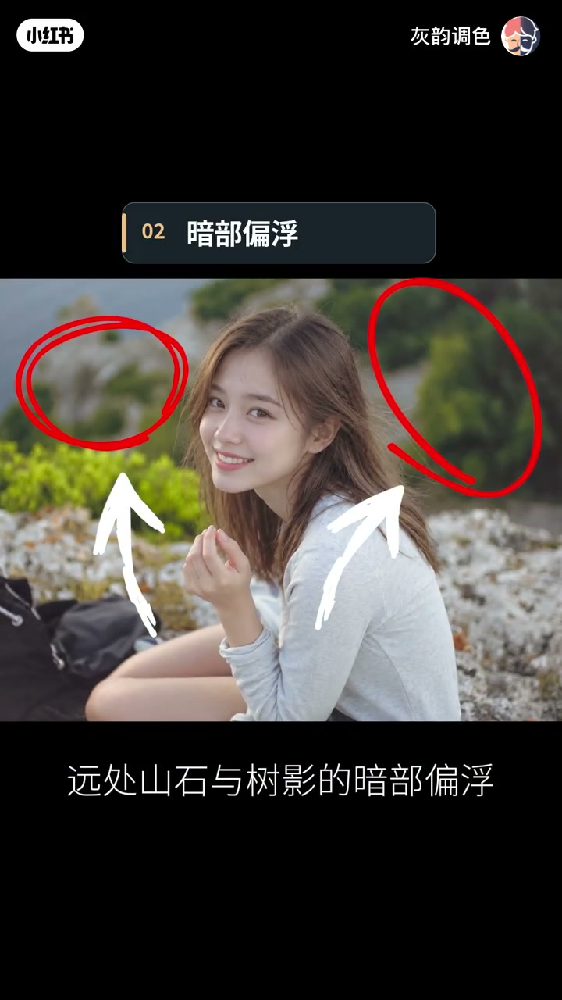
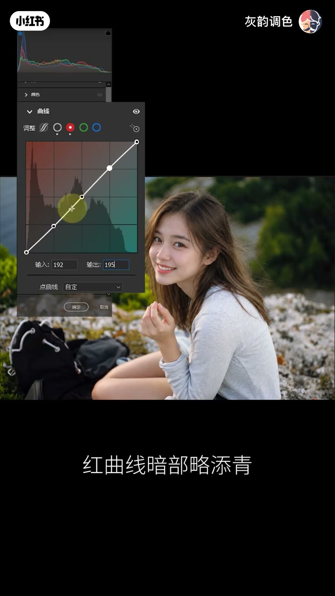
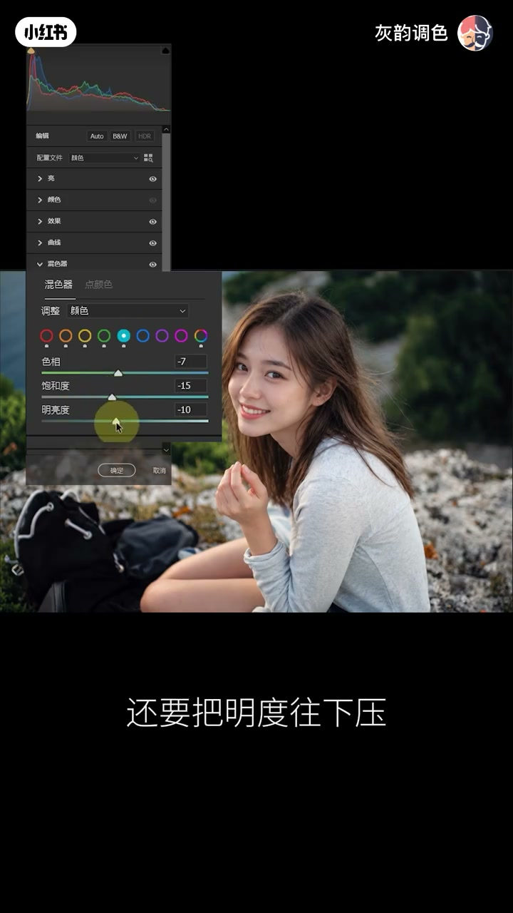
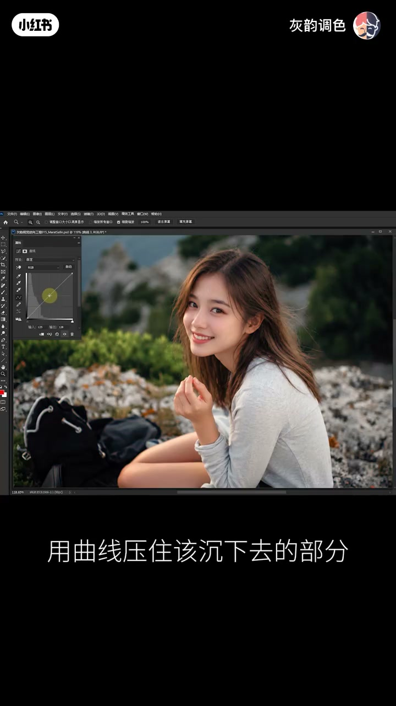
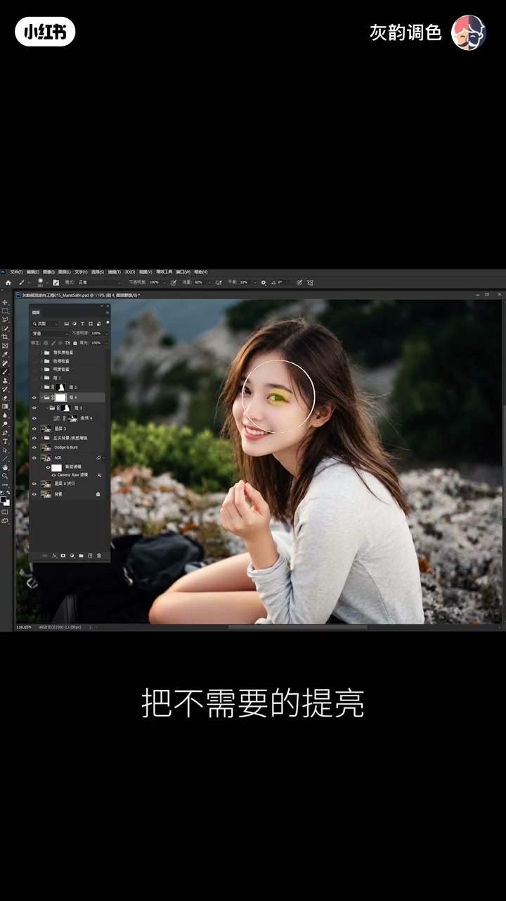

内容要点
这是一期对着一张工作图讲完的人像调色。口播从反例讲到 Marat Safin 的作品气质，再回到自己的照片，按 ACR 整体、Photoshop 精度往下做。片尾自称灰韵；转录里的「惠韵」「挥运」按画面账号名校正。下面按时间把判断和操作分开记，参数只写这一帧画面上能看见的数，不把中途滑块当成最终配方。
知识结构
草绿、天空、皮肤各自被修漂亮，整张照片却像一群人同时说话。对照作品里颜色还在，只是不再争抢，人物带着情绪从画面里走出来。
工作图左边黄绿太跳，远处山石和树影暗部偏浮，肤色和冷环境之间还缺一点温度差。她不先提曝光，顺序是影调、颜色、局部。
亮面板只轻轻收曝光，高光和阴影压一点，白色往上提。曲线稳住中灰、压实暗部、拖起亮部。红蓝通道让青蓝沉进山影，暖意停在光里。纹理、清晰和去雾是质感，不是磨皮。
脸已经有光，继续加亮加饱和在这张图上是错的。黄绿退饱和、绿色再压明度、蓝色退后。然后颜色分级、主体蒙版，以及面部和身体皮肤内部的明暗。
皮肤先用 Retouch4me Dodge & Burn 做中性灰。背景用通道算出暗部和中间调，曲线只压该沉的地方，组蒙版把人物排除在外。发丝高光用红通道找出原有的亮，再套三层蒙版，避免山石一起发白。
收束时黄绿退后、山影沉下、发丝的光有了分寸。她把后半段留给判断：工具让选择变多，值得留下什么仍靠创作者。镜头里只有一瞬，镜头外是一个人的一生。
人物不够突出时，先看是不是背景太喧哗。暗部要深但不能死黑，肤色要暖但不能假。整体方向定了之后，局部才用蒙版和通道守住不该动的地方。
颜色都赢了，人物却输了
00:00–00:38开场没有自我介绍，直接把一张失败的好看摆出来。草绿的墙抢眼，天空蓝得发亮，皮肤白得发光。每一处单独看都像修好了，合在一起却互相盖过。她的比喻是：整张照片像一群人同时大声说话，谁都在抢镜，偏偏听不见主角。
大约 13 秒她把镜头转向 Marat Safin 的一组作品。口播描述的是风略过发丝、光擦过脸颊、山石沉入阴影、草木悄悄退场。颜色没有消失，只是不再争抢。人物不必亮得刺眼，却像带着情绪从画面里走出来。视频没有交代这组作品的拍摄年份或具体哪一张，这里只保留她的观看结论。
你在拼命让颜色被看见，而真正动人的作品是让人物被记住。
她把这件事收成四句口诀：光有方向，暗有分寸，色有主次，情绪才有去处。这是作者的判断框架，后面八分钟都在往这四句上靠。
动手之前先问观众该看哪里
00:38–01:3538 秒她说真正的考验是离开别人的作品，面对自己的照片：动手之前能不能知道哪里该留、哪里该收、观众该看向哪里。工作图本身并不差。笑容自然，脸上有光。转录下一句听成「谨慎也替人物做了第一层分离」。这一时刻字幕只打出「笑容自然」，背景是虚的，但画面上没有出现「景深」两个字，所以正文不把原词改写成景深。
她认为越是这种已经像样的照片，越容易让人忽略真正的问题。问题被她点在三处，方向却只有一个：画面还没排好主次。

第一处是左边的黄绿太跳，先抢走视线。第二处是远处山石和树影的暗部偏浮，撑不起空间。画面标题写的就是「02 暗部偏浮」，转录里的「偏幅」按这行字幕校正。第三处是人物已经够亮，肤色和冷色环境之间还缺一点温度差。所以她叫停提曝光：有时候不是人物不够亮，而是背景太喧哗。
这次不靠预设碰运气。顺序说得很死：先立影调，让暗部沉得住；再收颜色，让黄绿退得下；最后做局部，让人物的温度留得住。两条边界也先说在前面：暗部要深，却不能死黑；肤色要暖，却不能假。分工是 ACR 管整体，Photoshop 管精度。先让目光有归处，再让参数上场。
立影调：暗要有重量，亮要有去处
01:36–02:441 分 36 秒进入 ACR。想要深度时，很多人的第一反应是压曝光、加对比，把山石树影一把按进黑里。她拦了一下：如果人物和远山一起变暗，那不叫空间变深，只叫整张照片变黑。她要的深邃，是暗有重量、亮有去处，而不是把光赶出去。
口播说亮面板曝光只轻轻收住，高光和阴影压一点，白色反而往上提。上面这张截图停在「所以亮面板」这一句，曝光和对比已经动了，高光、阴影、白色、黑色还是 0。所以这些数字只说明这一帧，不能当成她最终的滑块配方。她强调的不是一味求暗，而是留下明暗之间的呼吸。
紧接着是曲线：中灰稳住，暗部压实，亮部拖起来，黑点略微内收，让最深处仍有分寸。然后看红蓝通道。字幕把转录里的「略天青」写成「略添青」：红曲线暗部略添青、亮部略添红，蓝曲线暗部添蓝、亮部添黄。她要的结果是青蓝沉进山影，暖意停在光里。

她先不往下调，让画面自己说话，并切了两次之前、之后。口播的观察是：远山有了重量，脸上的光没有被一并埋掉。深度不是靠蛮力压出来的，是靠层次撑起来的。
效果面板里她轻加纹理、清晰度和去雾，再稍稍收暗四周。她特意说这不是磨皮，反而可能让皮肤纹理更明显。真实质感来自控制，而不是一味抹平。到这里，影调有了骨架，照片真正的反转才开始。
真正该动的是身后那片黄绿
02:44–03:302 分 44 秒她问：人物不够突出，你会不会本能地继续加亮度、加饱和度，恨不得让人从照片里跳出来。在这张图上，她说这是大错特错。脸已经有光。真正抢戏的是左边那片黄绿，真正该动的是人物身后的世界。
操作分两步。先用相机校准，微调红、绿、蓝原色的关系。再进混色器：黄色收饱和；绿色不止收饱和，还要把明度往下压；蓝色也适当退后。转录把「饱和」听成「饱盒」，面板上的滑块名是饱和度。

她让观众盯住左边的植被，再看人物的笑容，又切了一轮之前、之后。树还是那棵树，山还是那座山，人物甚至不必再亮一分，视线却开始向人物靠拢。她的结论是：有分寸的色彩，不是让所有颜色争着出场，而是让重要的颜色拥有话语权。这仍是这一张工作图上的判断，她没有说所有绿都该压暗。
分级和皮肤蒙版还不到收工
03:30–04:19颜色分级再压一点阴影明度，给中间调添一丝暖。整体色调有了方向之后，她说人物和背景之间还有许多细微关系要单独照顾，于是来到蒙版。转录的「猛版」按画面里的蒙版校正。主体微微加暖，背景轻轻压暗，让人物和环境的距离再拉开一些。
这一帧的色温和色调是主体蒙版上的读数，和字幕「背景轻轻压暗」并不同步，背景那一步的具体暗度没有停在数字上。她接着问：整体好看，就等于局部精准了吗？还早。她单独选出面部和身体皮肤，收高光，提阴影和白色，再压一压黑色，让皮肤内部的明暗重新站稳。
3 分 56 秒回到整张工作图，再看一次之前、之后。暗部稳住了，杂色退后了，人物站到了该站的位置。她仍然不让收工：肤色和背景之间那些微妙过渡，还要更精准的控制。整体方向有了，局部的分寸才考验判断。她顺口说这也是灰韵系统营重点训练的能力。转录写「挥运系统营」，账号名是灰韵调色，按账号校正，课程大纲视频里没有展开。
通道把背景沉下去，人物的光留着
04:19–06:024 分 19 秒进入 Photoshop。ACR 已经把明暗和色彩摆好位置。接下来的考验换成两句：该改变的地方能不能精准改变，不该动的地方能不能纹丝不动。
先看皮肤。细碎的亮斑和暗斑正在打断脸上的光影过渡。她调用 Retouch4me 的 Dodge & Burn，做一次中性灰整理。4 分 36 秒左右画面停在滤镜菜单里的 Retouch4me Dodge Burn。她把分工说清楚：工具负责效率，真实质感由人把关。前后对比之后，她把真正的技术考验放到背景。
ACR 已经让山石沉下来，可暗部仍有些松散，中间调也缺少支撑。如果再压全局曲线，人物脸上原本正确的光也可能跟着受伤。所以这次不比力度，比精度。口播的做法是：先让绿通道与自身做她称为「绿色计算」的运算，再对得到的 Alpha 通道做叠加和「双反向」，得到暗部的灰度控制范围，载入选区，用曲线压住该沉下去的部分。抽到的帧停在曲线上，没有停在「计算」对话框，因此「绿色计算」和「双反向」只按口播保留，不改写成某个未露面的混合模式菜单。

还没完。她再用合并图层的灰色通道与自身做排除运算。那张 Alpha 两头弱、中间强，原本混在一起的中间调被单独提出来。载入选区后，进一步强化中间调的明暗反差，再把调整图层切到明度模式。她要重塑的是光影结构，转录听成「光影几幅」，具体词画面没核对，采用的是她紧接着的意思：不要让已经安顿好的颜色再乱一次。
最后一道保护：把刚才的背景影调调整收成组，用主体选择创建组蒙版，再把蒙版反向，把人物排除在调整范围之外。她把三层职责说成一句：通道计算负责筛选明度，明度模式尽量保护色彩，最外层蒙版负责守住人物。不但要让背景沉得下去，更要让人物原有的光留得下来。
5 分 49 秒她让观众盯住山石，再看之前、之后。结果不是背景简单黑了一层，而是岩石有了起伏，树荫有了前后。不同明度各归其位，而不是所有地方一起受力。
发丝上的光要停在该停的地方
06:02–07:26最后看发丝。风已经掀起头发，那几缕受光还差一点神采。直接把这一片提亮行不行？她说当然不行。发丝是亮了，背后的山石也跟着发白。光有了，边界却丢了。要强化的是发丝原本就有的那几缕光，而不是让周围的世界一起变亮。
所以这一步先别提亮，先把光找出来。她让红通道与自身做叠加运算，提取画面原有的高亮区域，再用曲线轻轻拖起受光的部分。转录的「高亮群众」按这句话的意思记成高亮区域，对话框本身没有被截到。然后把调整成组，载入主体选区，建立组蒙版，先把背景隔离在外。
她说这样还远远不够。主体蒙版能保护背景，却不能决定人物身上哪些高光该加强、哪些必须保留。于是外围再套一层组，建立白色蒙版，用黑色柔边画笔把不需要的提亮一点点擦掉。转录的「揉边」按字幕校正为柔边。

图层名里出现「高频细节」和「低频色块」，但这一段口播没有讲解频率分离，只交代画笔在擦掉不需要的提亮。三层控制她是这样分的：内层通道蒙版负责识别亮度，中层主体蒙版负责守住边界，最外层手工蒙版负责最后的取舍。正因前两层已经锁定光的亮度和空间范围，最后一层才能放得开，也收得住。
真正高阶的修图，不是你能把光提得多亮，而是你能不能让它恰好停在该停的地方。
7 分 17 秒她让观众看结果：该亮的地方亮了，不该亮的地方纹丝不动。功力不是你敢改多少，而是知道哪里值得改变，哪里必须守住。7 分 26 秒宣布所有调整到此为止。
可以改颜色，别把人修丢
07:26–08:21最后她不讲参数，让照片自己回答，再切一轮之前、之后。她点名三处变化：黄绿退后，山影沉下来，发丝上的光也有了分寸。比结果更值得琢磨的，是每一步背后的判断和取舍。她说这是调色系统营里一直强调的东西，具体课表视频没有展开。
然后口吻从操作转到观看。她问有没有被照片里一个素不相识的人忽然打动过：隔着屏幕，隔着毫不相干的人生，却因为一个笑容停下来。那一刻天有多蓝、草有多绿都不重要了。今天花这么多时间修光影、修颜色，不是为了制造那份感动，而是怕它被喧闹的画面掩埋。
AI 和工具让影像有越来越多的可能。万千选择之中，究竟什么值得留下，仍然需要创作者的判断。这是她的立场，不是对某款工具的测评。镜头里只有一瞬，镜头外却是一个人的一生。可以改变颜色，但别把那个真实的人修丢了。片尾她说「我是灰韵」，转录记成「惠韵」，8 分 18 秒道别。